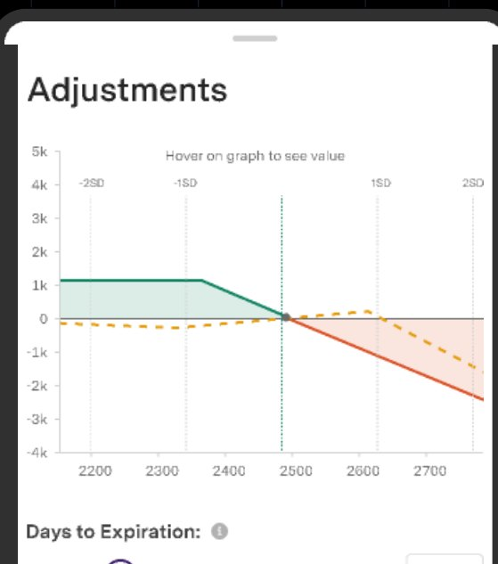

Case study
Back to the day
11:42
When a target lasts two ticks.
← Back to the day
P&L Alerts
01 / 14
11:42

Next, at 15:30
Positions settle. Reviews start. →
Orders, Positions and Holdings · my team's work
← Back to the day
Screens: Upstox Android, from the shipped design files